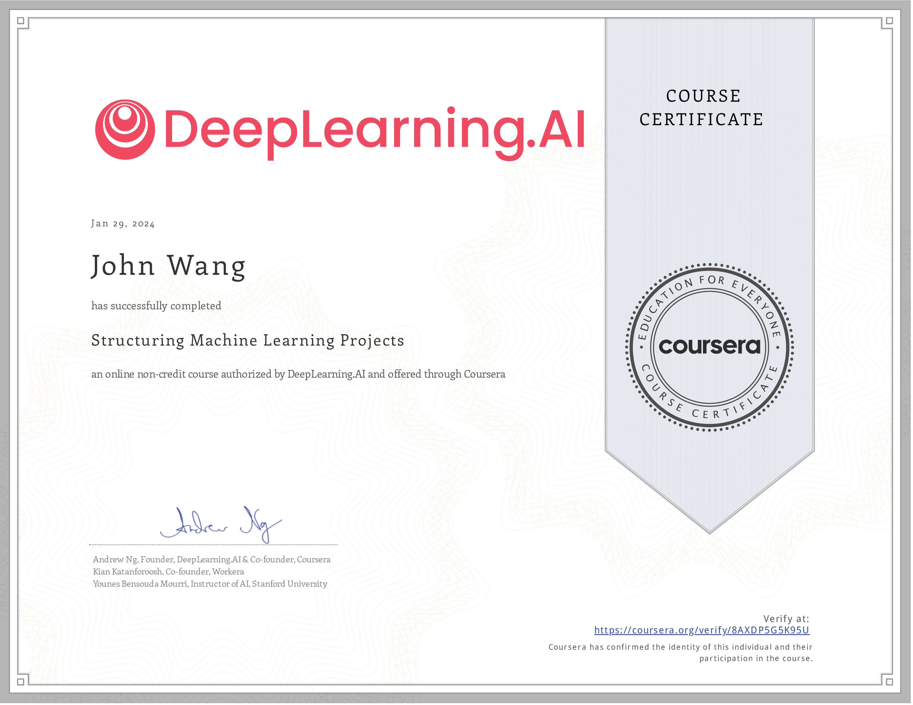
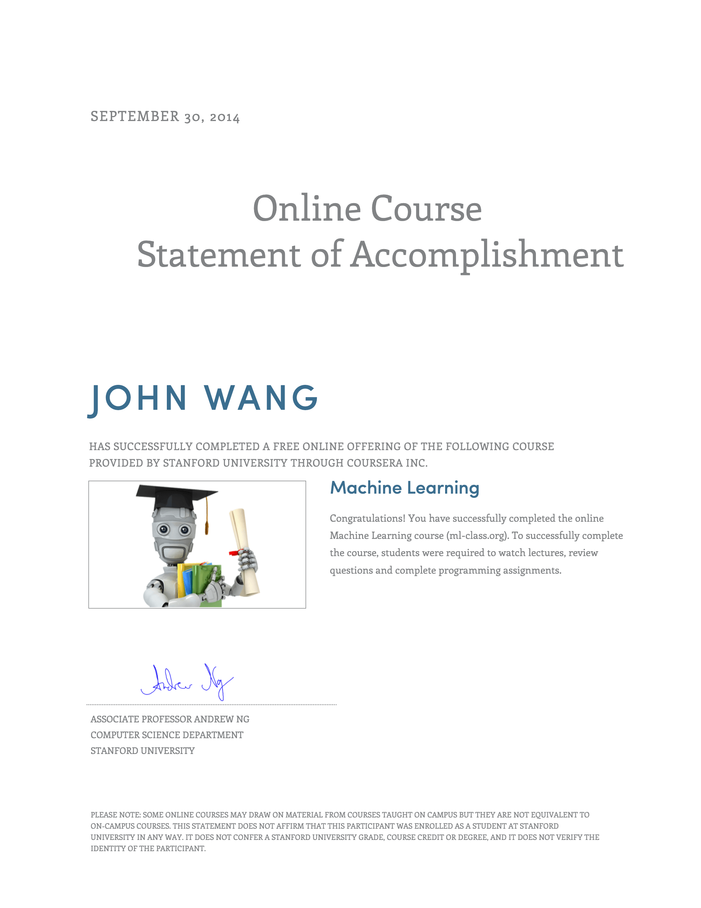

John's Machine Learning Certificates
- Structuring Machine Learning Projects - DeepLearning.AI - Andrew Ng
- Machine Learning Foundations for Product Managers - Duke University - Jon Reifschneider
- Machine Learning - Stanford University - Andrew Ng
- Databricks Accredited Lakehouse Fundamentals - Databricks Academy
- Databricks Accredited Generative AI Fundamentals - Databricks Academy
- AI for Product Management - Pendo, Mind the Product, and Google Cloud
Structuring Machine Learning Projects - DeepLearning.AI - Andrew Ng

Machine Learning Foundations for Product Managers - Duke University - Jon Reifschneider

Machine Learning - Stanford University - Andrew Ng

Databricks Accredited Lakehouse Fundamentals - Databricks Academy


Databricks Accredited Generative AI Fundamentals - Databricks Academy

AI for Product Management - Pendo, Mind the Product, and Google Cloud